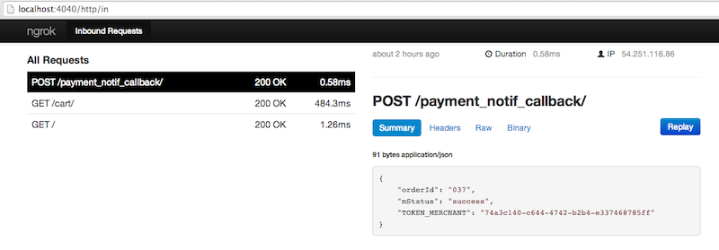

These are test cases list which can assist you to integrate with Veritrans. Once these cases already done, technically your website will be ready to GO LIVE with Veritrans!
| Parameter | Expected Result | |
|---|---|---|
| 1 | Request Get Token to Veritrans. | Veritrans send token_merchant and token_browser. |
| 2 | Submit form redirection to Veritrans Payment Page. | Successfully redirected and show Veritrans Payment Page. |
| 3 | Test dummy transaction using Visa Dummy Credit Card Number with CC No: 4111111111111111, CVV: Random 3 Digit, Expiration Date: 2014-above. | Transaction success. |
| 4 | Test dummy transaction using MasterCard Dummy Credit Card Number with: CC No: 5555555555554444, CVV: Random 3 Digit, Expiration Date: 2014-above. | Transaction success. |
| 5 | Transaction using invalid credit card number with: CC No: 1111111111111111, CVV : Random 3 Digit, Expiration Date: 2014-above. | Transaction failed. Customer will see "Please correct credit card information" message. |
| 6 | Test finish redirection url. | After payment has been completed, it will be redirected back to merchant website based on finish_payment_return_url parameter. |
| 7 | Test HTTP post send after payment notification handling from Veritrans. | Merchant server will get HTTP Post Notification from Veritrans which include details of transaction. Please set the notification url on VT-Web Configuration Page beforehand. |
| 8 | Test after payment email notification from Veritrans to Customer. | Customer will get email notification from Veritrans which include all details of transactions. |
You need to specify public internet domain or public IP address on the VT-Web Configuration Page to test the Veritrans notification service. Local addresses such as http://localhost/ or http://127.0.0.1/ will not work. So, in the traditional way, you need to deploy/upload your code to the public web server/web hosting in order to test the Veritrans notification service.
But, hey… We have some tips for you so you can test the Veritrans notification service on your local machine. You can use Ngrok to test HTTP(S) POST request notification on your local machine. With Ngrok, there is no need to deploy your code in the public web server/web hosting just to test the Veritrans notification service. However, your local machine need to be connected to internet in order to use Ngrok.
Here are the steps:
Assume your local server has already started on port 80 (http://127.0.0.1:80), now you can open your terminal, go to unzipped Ngrok directory, and run:
$./ngrok 80
You should see something like this:
Tunnel Status online
Version 1.6/1.5
Forwarding http://3d311b98.ngrok.com -> 127.0.0.1:80
Forwarding https://3d311b98.ngrok.com -> 127.0.0.1:80
Web Interface 127.0.0.1:4040
# Conn 87
Avg Conn Time 34.86ms
(Note: The generated address will be different on your terminal.)
With public address already set, you need to update the Payment Notification URL on the VT-Web Configuration Page. Mine is on http://localhost:80/payment_notif_callback, so I update my Payment Notification URL configuration to http://3d311b98.ngrok.com/payment_notif_callback.
Bonus tips: Ngrok captures all of the HTTP traffic that runs through it and provides a real-time web UI where you can introspect the requests in more detail. After starting Ngrok, open http://localhost:4040. Make a request to your tunnel and you should see the web UI update with detailed information about the request to examine the raw bytes sent over the wire.
